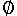
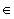

Aufgabe 12 - Färben (6 Punkte)
Sei d(G) der maximale Knotengrad eines Graphen und c(G) die chromatische
Kantenzahl des Graphen, d.h. die minimale Anzahl von Farben, sodass eine Färbung
der Kanten möglich ist ohne dass in einem Knoten zwei Kanten gleicher
Farben zusammentreffen. Beweisen Sie den Satz von König:
Für einen bipartiten Graphen ist d(G) = c(G)
Aufgabe 13 - DFS ungerichtet (3+2+3)
In der Vorlesung wurde DFS für gerichtete Graphen untersucht. Sei
nun G ein ungerichteter Graph ohne Schleifen. Seien T,F,B,C wie in der Vorlesung
durch den DFS Durchlauf definiert. Zeigen Sie folgendes Analogon zum Lemma
aus der Vorlesung:
a) C = 
b) für beliebige (v,w) aus E gilt: (v,w) 
B genau dann wenn (w,v)  T
F
T
F
c) Ist G zusammenhängend, dann ist (V,T) ein Baum.